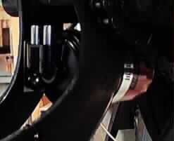

Summary:
This article covers the procedure to install the oil filter conversion kit on Commandos that did not come with an oil filter..
The kit (06-4283):
Procedure:

The filter is mounted on the engine cradle below the swing arm with the filter facing towards
the rear wheel as shown in these two pictures.
The second step is to mount the filter head (06-3139) on the engine cradle.
The filter head is mounted with the hose pipes pointing up and the filter thread pointing
towards the rear wheel. The Retainer (06-3368) goes between the filter head and the engine
cradle with the tab pointing towards the rear wheel. This Retainer is clamped to the
filter, when it is installed, as a safety devise.
The two bolts thread through the Tab Washer, through the engine cradle, through the retainer
and into the Filter Head. At this stage tighten up the bolts, but do not bend the
locking tabs of the Tab Washer over to secure the bolts. You may want to remove the filter head
for easy fitting of the Oil Lines in the next step.
The third step is to remove the old return oil line. The return line, the inside line
coming off the Oil Junction Block (06-2206) to the oil tank can be removed.
If you have not drained the oil from the oil tank, do so prior to this operation.
The fourth step is to install the two new oil lines. Slip the Spring Protectors over each
oil line and place the hose clamps on each end. One line goes from the Oil Junction Block to the
IN hose pipe on the Filter Head. The head is marked IN and OUT with the IN being closest to the
right side and the OUT being in the center. The other line goes from the OUT pipe to the oil tank.
The routing of the oil lines is the most direct routing possible. It will be obvious when you
go to mount them.
Place the Spring protectors where each line rubs against the engine cradle or swing arm.
When you are satisfied with the installation of the oil lines, tighten the hose clamps.
You may find it easier to remove the Filter Head mounting bolts during this step, so you can
move the head around during the oil line installation.
If you are mounting this on a race bike and need to safety wire the hose clamps, it is much
easier to do this with the Filter Head loose.
The fifth step is to tighten the Filter Head bolts (if you removed them for the
previous step) and bend over the locking tabs on the Tab Washer.
The final step is to screw on the filter and tighten the Filter Clamp. Oil the filter
"O" Ring with engine oil prior to screwing on the filter. Make sure the Retainer tab is between
the filter and the clamp and tighten up the clamp. I find it best to have the clamp screw over
the Retainer tab.
If this is mounted on a race bike, I find it best to loop the safety wire around the Retainer
tab, two turns, leaving plenty of free wire.
I then mount the Filter Clamp with the safety wire between the Filter head and the clamp.
Tighten the clamp and with the free wire, safety wire the clamp. I actually have a spare
Retainer in my tool box so I can wrap the wire around it, getting a nice tight wrap,
then slip it off my spare and onto the actual Retainer.
 The oil filter kit consists of the following parts:
The oil filter kit consists of the following parts:
One mounting head (06-3139).
One tab washer (06-3142).
Two 12" return oil lines (06-3144).
Four 3/8" hose clamps (06-3248).
Two spring protectives (06-3367).
One retainer (06-3368).
One 3 1/2" filter clamp (06-3369).
One oil filter (06-3371).
Two 5/16 x 24, 3/4" bolts (14-0114).

 The first step is to drill two 11/32" holes in the right side of the engine cradle as shown in
the following pictures. You can use the Retainer (06-3368) or the Tab Washer (06-3142) to mark
the hole placement.
The first step is to drill two 11/32" holes in the right side of the engine cradle as shown in
the following pictures. You can use the Retainer (06-3368) or the Tab Washer (06-3142) to mark
the hole placement.